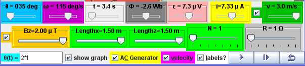
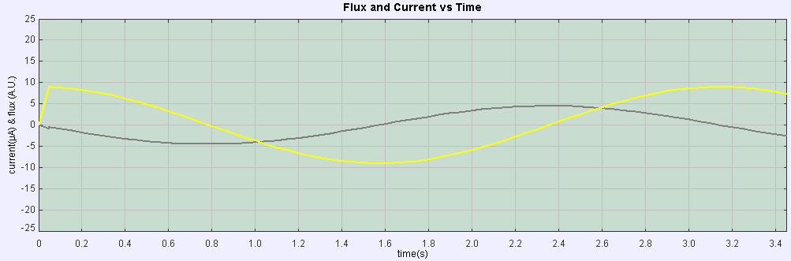

Alternating Current Electrical Generator Model in external magnetic field Bz direction and a rotating coil with mechanical rotating handle, brush and slip rings.
Description:
Electric generators turn motion into alternating-current electric power by exploiting electromagnetic induction. This AC generator consists of 2 pole magnets and a wire (usually a very long one that's wrapped to form several coils and known as an armature or coil). A hydraulic engine or some other outside source of motion (This applet has a handle bar for you to rotate) moves the wire or armature through the external magnetic field created by the magnets
When a wire passes through an external magnetic field, it causes electrons in that wire to move together in one direction. The current in the wire produce a magnetic field around the wire. The 2 different magnetic fields interact with each other results in a voltage (emf) to be "induced" in the coil. This motion of the electrons in the loop that is placed in a magnetic field is caused by a motional electromagnetic force (emf).
A simple alternating current (AC) generator is illustrated here. ABCD is mounted on an axle PQ. The ends of the wire of the loop are connected to 2 brushes contacting two slip rings continuously at position X & Y. Two carbon brushes are made to press lightly against the slip rings.
The key to producing motional emf is in change in the magnetic
flux
experienced by the coil loop.
In the case when an outside handle bar is rotating at θ (t) =
0.5*t,
the coil
is spinning at a constant rate of angular velocity ω = 0.5 rad/s
within
an
external magnetic field. Because it is always moving through the
magnetic
field, a current is sustained but always varying. But, because the
coil
is
spinning, it's moving across the magnetic field first in one
direction
and then
in the other, which means that the flow of electrons keeps
changing.
Because
the electrons flow first in one direction and in the other, the
generator
produces an alternating current.
Definition:
Faraday's law states the induced emf in a coil is equal to the negative of the rate of change of magnetic flux times the number of turns in the coil. The induced electromotive force or emf, ε in any closed circuit is equal to the rate of change of the magnetic flux , Φ through the circuit.
|ε| = | d(Φ)/ dt |
Where Φ = N.B.A cos ( B&A)
|ε| is the magnitude of the electromotive force (emf) in volts
Φ is the magnetic flux through the circuit (in Weber).
N is the number of turns of wire in the loop
B is the magnetic field
A is area of coil
Angle B&A is the angle between vector magnetic field and vector perpendicular to the area
Lenz's law states an induced
current
is always in
such a direction as to oppose the motion or change causing it.
The law provides a physical interpretation of the choice of sign
in Faraday's law of induction,
indicating
that the induced emf and the change in flux have opposite signs.
The
the
polarity of the induced emf is such that it produces a current
whose
magnetic
field opposes the change which produces it
ε = - d(Φ)/ dt
Apply Faraday's law and Lenz's law to the simulation model:
For the case of a rotating loop,
ε = - d(Φ)/ dt
From earlier equation as Φ = N.B.A cos ( B&A)
ε = - d(N.B.A cos ( B&A))/ dt
The physical setup of Bz and normal vector of area A when t = 0 s, such that angle B&A = ( θ + π/2 ).
And taking out the constants from the
differential
equation,
ε = - N.B.A d(
cos
( θ +
π/2 )/ dt
From mathematical trigonometry identity, cos ( θ + π/2) = -sin ( θ )
ε = - N.B.A d(-sin ( θ )/ dt
To derive an expression for the induced emf across the slip rings when the coil is spun at an angular frequency, ω, knowing θ = ω.t
ε = - N.B.A d(-sin ( ω.t )/ dt )
ε = N.B.A d( sin ( θ )/ dt ) which the equation used by the custom function getCurrent () = d( sin ( θ )/ dt )
When a closed circuit in connected to the rotating loop, using Ohm's law
ε = N.B.A.d( sin ( θ )/ dt ) = I.R which the equation used by the simulation model
When mechanical energy is used to rotate the loop, the armature induced an emf described by the righthand rule. The induced emf in a coil is equal to the negative of the rate of change of magnetic flux times the number of turns in the coil.
Use the rotating handle function input field θ(t)= _________ to see what happens when the rotating handle cranks the loop in the Bz magnetic field. The checkbox current flow & electron flow allow different visualization since I = d(Q)/dt and Q= number of charge*e. The Play & Pause button allows freezing the 3D view for visualizing these induced currents and for checking for consistency with the righthand rule.
When the rotating handle is moved by the input field θ(t)= 2*t ,
induced
current runs through ABCD (select the checkbox labels?) in a
manner
described
by
ε = N.B.A.ω
.cos ( ω.t
) = I.R.
Interpretation of graphs of ε versus t
If θ(t)= 2*t , imply 2 = ω ε/R = N.B.A.ω .cos ( ω.t )/R = I. which is the modeled equation.
If N = 1, B = 2 x10-6 T, A = 1.5*1.5 m*m, R = 1 Ω
ε/R = 1.2.1.5*1.5.2x10-6 .cos ( 2.t )/1 = I.
ε = 9x10-6 cos ( 2.t ) = IInterpretation of graphs of Φ versus t
Since ε = - d(Φ)/ dt
Therefore, 9x10-6 cos ( 2.t ) = - d(Φ)/ dt
- ∫ 9x10-6 cos ( 2.t ).dt = (Φ)
- 4.5x10-6 sin ( 2.t ) = (Φ) 
The Alternating Current Electrical Generator Model was created by Fu-Kwun Hwang and Loo Kang WEE with contributions of open source codes from Fu-Kwun Hwang, Wolfgang Christian & Anne Cox using the Easy Java Simulations (EJS) version 4.2 authoring and modeling tool. An applet version of this model is available on the NTNU website < http://www.phy.ntnu.edu.tw/ntnujava/ >.
You can examine and modify this compiled EJS model if you run the model (double click on the model's jar file), right-click within a plot, and select "Open EJS Model" from the pop-up menu. You must, of course, have EJS installed on your computer. Information about EJS is available at: <http://www.um.es/fem/Ejs/> and in the OSP comPADRE collection <http://www.compadre.org/OSP/>.